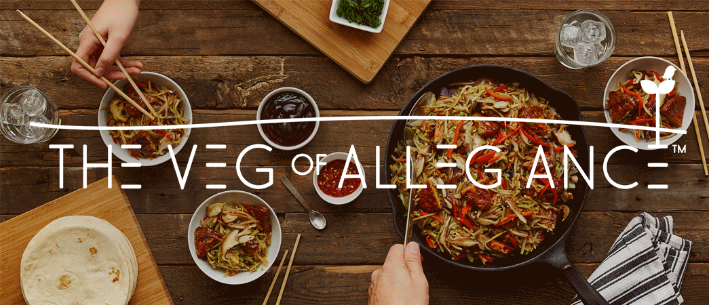

Recent Client Work
Well, this would be the place where I would proudly show off everything I've learned over the past few months. However, the work that I have produced thus far belongs to the client, and, in some cases, are projects that have not yet been released to the public. However, I don't want to leave you hanging. So, in the meantime, here is a list of clients I have worked with over the past few months.
A lot of what I have worked on were team projects with many contributors. However, there are a few small tasks that I was given the opportunity to work independently on. Such as this animation for Morningstar Farms. It never made it into production, but it was fun to create.
